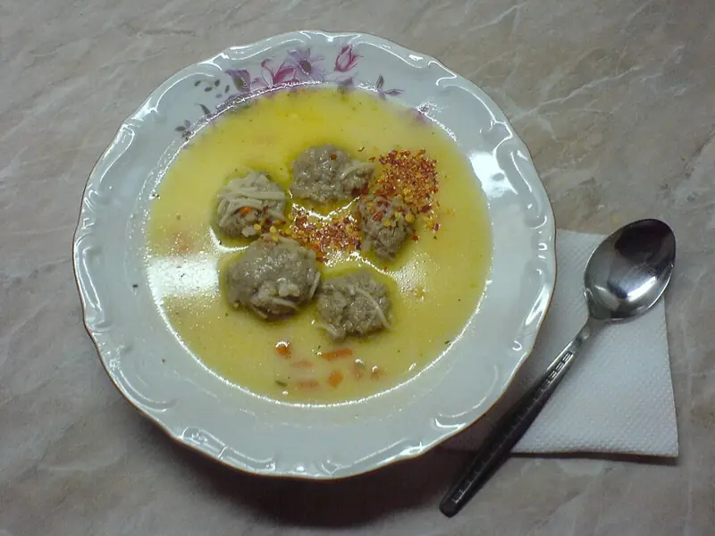

Фото: Biso, CC BY-SA 3.0

Суп с фрикадельками
Лёгкий суп с говяжьими фрикадельками, рисом и картошкой
50 мин5 порц.329 ккал на порциюБ 18 · Ж 18 · У 24Русская кухня
Продукты на 5 порц.
- Говяжий фарш400 г
- Яйцо куриное1 шт
- Лук репчатый1,5 шт
- Вода2 л
- Картофель3 шт
- Морковь1 шт
- Рис3 ст. л.
- Лавровый лист2 шт
- Соль2 ч. л.
- Перец чёрный молотый1 щеп.
- Укроп по желаниюпо вкусу
Как готовить
- Половину луковицы натрите на мелкой тёрке и смешайте с фаршем, яйцом, щепоткой соли и перца. Вымешайте 2-3 минуты.
- Мокрыми руками скатайте фрикадельки размером с грецкий орех.
- Доведите воду до кипения на сильном огне, посолите. Положите картофель кубиками, промытый рис и морковь кружками, варите 10 минут на среднем огне.
- Опускайте фрикадельки по одной в кипящий суп. Снимите пену.
- Добавьте остальной лук, мелко нарезанный. Варите 10-12 минут, фрикадельки всплывут и станут серыми внутри.
- Положите лавровый лист и перец, варите 2 минуты, выключите и посыпьте укропом.
Совет. Чтобы фрикадельки не разваливались, хорошо вымесите и отбейте фарш о миску. Можно заморозить сырые фрикадельки впрок.